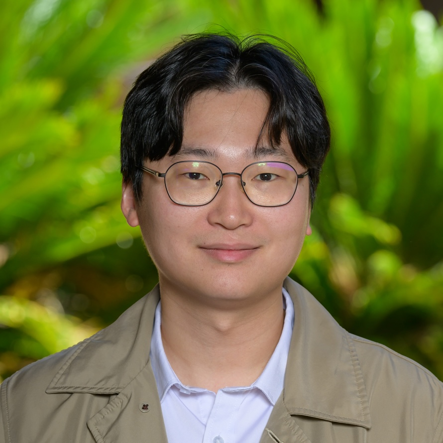

Junyoung Jeong
Fourth year Ph.D. student in Accounting at Stanford University.

About
I am interested in analytic models of how regulations shape the information that firms release to the economy.
Working Papers
-
Bank Security Reporting and Regulatory Capital ConstraintsJob Market Paper. I develop a model to study how regulatory capital constraints affect banks' reporting incentives for available-for-sale and held-to-maturity securities.May 2026
-
"The Corporate Alternative Minimum Tax and Financial Reporting Incentives"Submitted for Review. We develop a model to study how the Corporate Alternative Minimum Tax (CAMT) affects firms’ financial reporting behavior and their resulting tax burdens.April 2026
-
Complementarity and Substitution in Banking: The Role of LiquidityWe develop a continuous-general equilibrium model with persistent liquidity shocks to study how credit lines transmit liquidity shocks in the private credit sector to the banking sector.May 2026
Publications